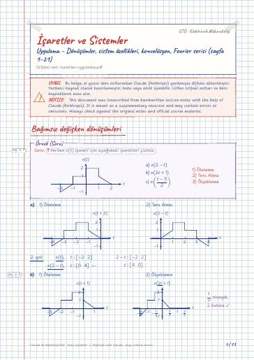

Signals and Systems · Digital lecture note
Recitation – Transformations, system properties, convolution, Fourier series (pages 1–21)
İşaretler ve Sistemler – Uygulama – Dönüşümler, sistem özellikleri, konvolüsyon, Fourier serisi (sayfa 1–21)
- Course
- Signals and Systems (ELM264)
- Semester
- Semester 4 · Spring 2022–23
- Format
- PDF · 11 pages · 0.2 MB · handwriting-style LaTeX
- Language
- Turkish
- Original note
- isaretler-uygulama.pdf
Open the PDF (0.2 MB)LaTeX source (.tex)Original handwritten note

What is in this note?
Section headings of the note (in Turkish):
- Bağımsız değişken dönüşümleri
- Sistem özellikleri
- (Lineerlik Şartı)
- (Zamanda Değişmezlik Şartı)
- LTI sistemlerde nedensellik
- Konvolüsyon
- Ayrık zamanda konvolüsyon
- Seri bağlı LTI sistemler
- Ayrık zamanlı Fourier serisi
- Sürekli zamanlı Fourier serisi
Text of the note
Show as plain text (Turkish; formulas and drawings are not included)
Bağımsız değişken dönüşümleri
a) bellekli b) kararlı c) nedensel d) doğrusal \
e) zamanda değişmezlik özelliklerine sahip olup olmadığını inceleyiniz.
(Bu sayfa 4. sayfanın biraz ilerletilmiş ekran görüntüsü: b)–d) satırları tekrar ediyor, üzerlerine pembe altı çizili vurgular eklenmiş – ör. ``kararlı değildir'', ``Nedensel''. Yeni kısımlar aşağıda.)
Soru: Aşağıda giriş-çıkış ilişkisi verilen sistemleri lineerlik bakımından sınıflandırın.
(Sayfanın üst kısmı 7. sayfadaki a) çözümünün tekrarı; yeni kısım b) çözümü.)
Soru: Aşağıda giriş-çıkış ilişkisi verilen sistemleri zamanda değişmezlik bakımından sınıflandırın.
(9. sayfadaki b) çözümünün ilerletilmiş hâli: satırlar 1 ve 2 diye numaralanmış, ve ``zamanda değişir'' vurgulanmış. Pembe ek:)
LTI sistemlerde nedensellik
Soru: sistem nedensel midir?
Nedensellik Şartı: t<0 , h(t)=0 ise sistem nedenseldir!
… rından LTI sistemin çıkışını konvolüsyon kullanarak hesaplayın.
(sorunun ilk satırı ekran görüntüsünde kesik)
(Üst kısım 12. sayfanın devamı; pembe eklerle: t-1<0 ise y(t)=0 ; 0≤ t-1<3 → 1≤ t<4 ; şekilde örtüşmeyen kısımlar (soldaki τ<0 bölgesi ve t-1 ile 3 arası) pembe X ile işaretlenmiş.)
Ayrık zamanda konvolüsyon
Soru: Ayrık zamanda aşağıdaki giriş ve dürtü cevapları için konvolüsyon hesaplayın ve grafiğini çizin.
(Üst kısım 14. sayfadaki a) çözümünün ve y[n] grafiğinin tekrarı; sadeleştirilen kesir pembe ile çerçevelenmiş, son satırın başına pembe ile `` y[n]= '' yazılmış ve u[n] vurgulanmış. Pembe ekler:)
b)Claude notu: ikinci satırdaki ikinci toplamda muhtemelen u[n-k] olmalı (sonuçta u[n-2] elde ediliyor); 16. sayfada pembe ile düzeltilmiş.
(b) çözümünün düzeltilmiş/ilerletilmiş hâli; sağ üstte a) şıkkının y[n] grafiğinin ucu görünüyor.)
Seri bağlı LTI sistemler
Soru: Seri bağlanmış iki LTI sistemi düşünün. Bunlardan ilkinin dürtü cevabı
Ayrık zamanlı Fourier serisi
Soru: Aşağıda Fourier serisi katsayıları verilen x[n] işaretini bulunuz.
Claude notu: son terimde 3ω_0 = 3π/4 olduğundan muhtemelen (3π n4) olmalı.
(19. sayfanın pembe eklerle tekrarı: grafikte k=4 'teki sıfır değerine ``4'' yazılmış; kutudaki ve açılımdaki üsler pembe + ile düzeltilmiş; ilk köşeli parantezin altına 2(ω_0 n) yazılmış; 12(3ω_0 n) terimi okla gösterilmiş. Pembe ekler:)
Sürekli zamanlı Fourier serisi
(satır ekran görüntüsünde kesik)
Üstel seri Açılımı: ,